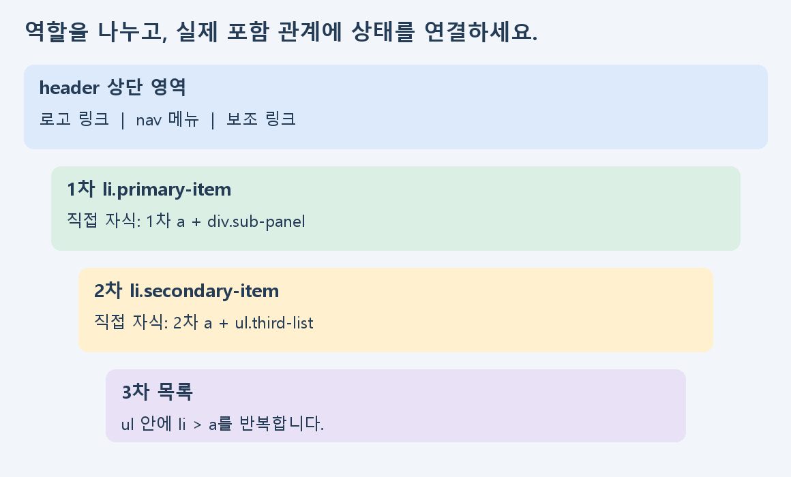

구현 응용 | C그룹
1. 상단바부터 한 단계씩 확장하기
처음부터 3차 메뉴까지 한 번에 만들지 않아도 됩니다. 상단바의 역할을 나누고 2차 한 항목, 3차 한 항목을 차례로 연결하세요. 각 단계의 HTML과 CSS를 직전 단계와 비교합니다.
| 순서 | 폴더 | 확인 |
|---|
| ① 기본 | 01_shell | 로고·메뉴·보조 링크 역할 |
| ② 2차 | 02_second | 이미지와 2차 목록의 포함 관계 |
| ③ 3차 | 03_third | 2차 li 안에 있는 3차 ul |
| ④ 상태 | 04_states | 닫힘·2차·3차 hover와 초점 |
권장 170분: 기본·파일 40분 → 중첩 구조 50분 → 상태·위치 45분 → 아이콘·점검 35분. 강의는 필요한 부분을 멈추어 시청합니다.
현재 평가 피드백의 상단바·하위 메뉴·HTML/CSS 보완을 다룹니다. 예제는 별도 제작한 가상 자료실이며 평가 정답이나 학생 제출물이 아닙니다. 원래 문제에 지정된 이름·이미지·수치·구조는 실제 명세를 대조하세요. 키보드·좁은 화면 확인은 추가 학습이며 기존 평가 배점을 바꾸지 않습니다.
구현 응용 | C그룹
2. 로고·메뉴·보조 링크 역할 나누기

header는 상단 영역, nav는 주요 이동 링크 묶음입니다. 로고 이미지와 메뉴 목록의 역할을 바꾸어 넣지 마세요. 링크 a와 이미지 img는 서로 다른 역할입니다.
<header>
<a href="#main"><img src="../assets/logo.svg" alt="LEAF LAB 자료실 홈" /></a>
<nav aria-label="자료 분류">메뉴 목록</nav>
<div>보조 링크</div>
</header>
따라 하기: 01_shell을 열고 각 영역이 코드의 어느 태그인지 표시하세요. 태그 안의 문구 하나를 바꾸고 실제 화면의 그 위치만 바뀌는지 확인합니다.
구현 응용 | C그룹
3. 파일 연결과 목록의 기본 구조 익히기
CSS는 같은 폴더의 style.css, 이미지는 한 단계 위 assets 폴더에 있습니다. 파일 위치와 이름을 먼저 확인하세요. 스타일이 없다고 무작정 다시 작성하지 않습니다.
<link rel="stylesheet" href="./style.css" />
<ul>
<li><a href="#design">디자인</a></li>
<li><a href="#web">웹 퍼블리싱</a></li>
</ul>
| 단어 | 뜻 |
|---|
| ul | 여러 항목을 묶는 목록 |
| li | 목록의 항목 하나 |
| a | 다른 위치로 이동하는 링크 |
| class | CSS에서 찾을 때 사용하는 요소 이름 |
| 직접 자식 | 한 단계 바로 안에 있는 요소 |
따라 하기: 시작 태그와 닫는 태그를 짝지어 보세요. ul 바로 아래에 li가 있고 li 안에 링크가 있는지 확인합니다.
구현 응용 | C그룹
4. 2차 안에 3차 한 항목 넣기
<li class="primary-item">
<a href="#library">자료 살펴보기</a>
<div class="sub-panel">
<ul class="secondary-list">
<li class="secondary-item">
<a href="#design">디자인</a>
<ul class="third-list">
<li><a href="#type">타이포그래피</a></li>
</ul>
</li>
</ul>
</div>
</li>02_second와 03_third는 구조를 읽기 쉽게 하위 목록을 항상 펼쳐 둔 중간 단계입니다. 이 단계의 열린 화면을 최종 닫힘 동작의 오류로 혼동하지 마세요.
3차 목록은 해당 2차 li 안에 넣습니다. 한 항목을 먼저 완성한 뒤 복사해 같은 구조로 늘리세요. 닫는 li를 너무 빨리 쓰면 3차가 밖으로 나갈 수 있습니다.
따라 하기: 02_second와 03_third를 나란히 비교하고 추가된 ul을 찾으세요. 그 ul이 어느 li의 자식인지 말로 설명해 봅니다.
구현 응용 | C그룹
5. 부모 상태로 자식 표시 바꾸기
hover는 마우스가 올라간 상태입니다. 부모에 마우스를 올렸을 때 바로 안의 하위 영역을 바꾸려면 부모:hover > 자식 형태로 씁니다.
.sub-panel { display: none; }
.primary-item:hover > .sub-panel { display: block; }
.third-list { display: none; }
.secondary-item:hover > .third-list { display: flex; }먼저 기본 상태를 닫고 그다음 열림 조건을 적습니다. HTML의 class와 CSS의 이름이 다르면 연결되지 않습니다. >는 직접 자식만 찾습니다.
따라 하기: 04_states에서 1차 링크에 마우스를 올린 뒤 디자인 링크로 이동하세요. 어떤 부모의 상태 때문에 어떤 자식이 나타났는지 순서대로 말해 봅니다.
구현 응용 | C그룹
6. 펼쳐지는 위치와 크기 확인하기
relative 부모는 위치 기준이 될 수 있고 absolute 자식은 그 기준에 맞춰 배치됩니다. 펼침 영역이 엉뚱한 곳에 있으면 먼저 부모를 확인하세요.
.study-nav { position: relative; }
.sub-panel { position: absolute; top: 100%; left: 0; right: 0; }| 증상 | 먼저 볼 것 |
|---|
| 화면 밖으로 밀림 | 큰 고정 너비·padding |
| 항상 펼쳐져 있음 | 기본 display와 열림 선택자 |
| 내용이 새어 나옴 | height·overflow 등 숨김 방식 |
| 상단바가 움직임 | hover에 padding·높이가 바뀌는 규칙 |
padding:auto는 허용되는 안쪽 여백 값이 아닙니다. 0이나 실제 필요한 길이 등 유효한 값으로 작성하고 화면을 확인합니다.
따라 하기: 부모·자식 선택자를 한 개씩 표시하고 브라우저 폭을 줄여 보세요. 1200·768·390px는 연습 확인 조건이며 원래 평가의 추가 채점 조건이 아닙니다.
구현 응용 | C그룹
7. 링크와 원 세 개 아이콘 작성하기
보이는 글자만으로 링크가 되는 것은 아닙니다. a의 href에는 실제 이동할 위치를 적습니다. 아이콘을 직접 작성하는 조건이라면 img로 파일을 부르는 것과 구분하세요.
<a class="icon-link" href="#classification">
전체 분류
<svg viewBox="0 0 24 24" aria-hidden="true" focusable="false">
<circle cx="5" cy="12" r="1.8"></circle>
<circle cx="12" cy="12" r="1.8"></circle>
<circle cx="19" cy="12" r="1.8"></circle>
</svg>
</a>| 속성 | 역할 |
|---|
| viewBox | SVG 안의 좌표 범위 |
| cx·cy | 원 중심의 가로·세로 위치 |
| r | 원의 반지름 |
| aria-hidden | 텍스트를 보조하는 장식 도형을 따로 읽지 않게 표시 |
따라 하기: 원 하나의 cx 또는 r을 바꾸고 변화만 확인하세요. 링크에는 “전체 분류”처럼 목적을 알 수 있는 글자를 남깁니다.
구현 응용 | C그룹
8. 목표 화면과 키보드 흐름 확인하기


04_states에서 Tab으로 메뉴를 이동하면 초점이 표시됩니다. :focus-within 규칙은 초점이 메뉴 안에 있을 때 하위 링크를 표시합니다. 마우스가 밖에 있어도 초점 때문에 열려 있을 수 있습니다.
a:focus-visible { outline: 3px solid #b34c12; }
.primary-item:focus-within > .sub-panel { display: block; }이 연습은 일반 링크 이동입니다. Escape·화살표 조작은 구현하지 않았으며 터치에서는 본문의 직접 이동 링크도 사용할 수 있습니다.
따라 하기: 마우스와 초점 모두 메뉴 밖으로 옮겼을 때 닫히는지 확인하세요. 2차·3차의 어떤 링크까지 직접 확인했는지 양식에 적습니다.
구현 응용 | C그룹
9. 한국어 무료 강의로 필요한 부분 복습하기
국내 한국어 무료 공개 강의와 문서입니다. 생활코딩 페이지에는 강의 영상과 예제가 함께 있습니다. 어려운 부분은 멈추어 코드를 직접 바꾸세요.
생활코딩 egoing | 부모 자식 선택자
부모 자식 선택자 원문 열기
열람 후 실습: 내 메뉴에서 부모와 직접 자식을 한 개씩 표시하세요.
생활코딩 egoing | 가상 클래스 선택자
가상 클래스 선택자 원문 열기
열람 후 실습: 마우스를 올리기 전후에 어떤 글자·영역이 변하는지 적으세요.
생활코딩 egoing | 포지션
포지션 원문 열기
열람 후 실습: relative인 부모와 absolute인 자식을 찾아 연결하세요.
TCP School | SVG — 원 그리기
SVG — 원 그리기 원문 열기
열람 후 실습: cx·cy·r 중 하나를 바꾸고 원의 변화를 확인하세요.
옛 강의의 브라우저 지원표를 현재 지원 범위로 단정하지 마세요. 여기서는 선택자·상태·위치·도형의 원리를 배우고 실제 사용하는 브라우저에서 확인합니다. 외부 원문은 링크로 연결하고, 본문의 도식과 자료실 연습 코드는 별도로 제작했습니다.
구현 응용 | C그룹
10. 자기점검과 질문하는 방법
| 점검 | 완료 기준 |
|---|
| 파일·구조 | CSS·이미지 연결, 태그 닫힘과 직접 자식 관계를 확인함 |
| 상태 | 닫힘·2차·3차의 조건과 변경 대상을 설명함 |
| 위치·크기 | 기준 부모와 펼침 위치, 글자·여백·가로 잘림을 확인함 |
| 링크·아이콘 | 실제 목적지와 대체텍스트, 인라인 SVG를 대조함 |
| 검토 기록 | 증상·원인·수정·환경·재확인과 남은 질문을 적음 |
- □ 로고와 메뉴의 역할을 구분했습니다.
- □ 3차 목록이 들어 있는 2차 li를 찾을 수 있습니다.
- □ HTML class와 CSS 선택자를 대조했습니다.
- □ 기본·2차·3차 화면을 확인했습니다.
- □ 어려운 위치와 현재 증상을 질문으로 남겼습니다.
질문 문장: “[파일명]의 [태그·선택자]에서 [현재 증상]이 보입니다. [확인한 내용]까지는 알겠지만 [모르는 점]이 어렵습니다.” 다음 학습은 같은 구조를 반복하고 B그룹의 오류 진단 순서로 원인을 찾는 것입니다.